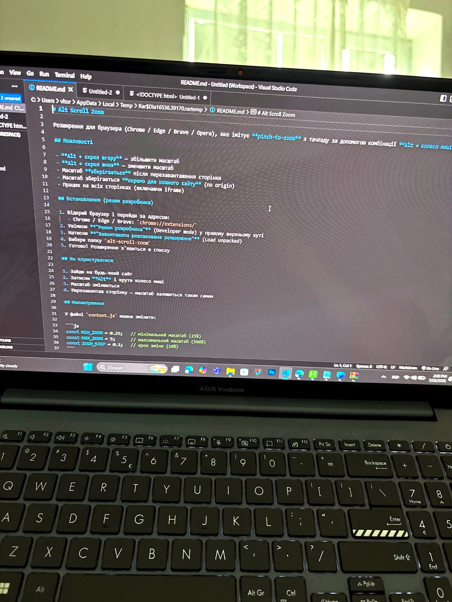
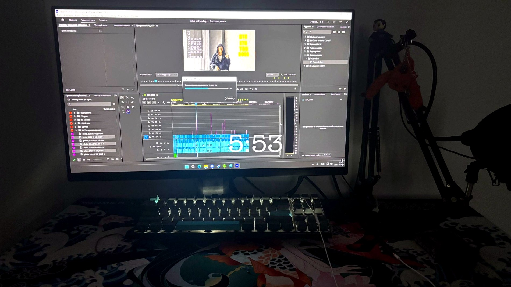

Leontiy — Personal Project
Мій репозиторій на GitHub. Переглянь код та реалізацію проєкту.
VIEW REPOSITORY ↗WEB DEV · VIBE CODING · VIDEO EDITING
Створюю цифрові продукти, експериментую з кодом та перетворюю ідеї на реальні проєкти. Мій фокус — vibe coding, веброзробка й відеомонтаж.

// WHO IS LEONTIY?
Мене звати Леонтій Бондарчук. Я з Дубна, Україна. Найбільше захоплююся vibe coding — швидким створенням цифрових продуктів за допомогою коду та сучасних інструментів. Також займаюся веброзробкою й відеомонтажем. Моя амбітна ціль — побудувати проєкти, які приведуть мене до капіталу в 2 мільйони доларів. Для мене це мотивація постійно вчитися, тестувати ідеї та створювати.
// SELECTED WORK
Код, експерименти та відео
Мій репозиторій на GitHub. Переглянь код та реалізацію проєкту.
VIEW REPOSITORY ↗Окремий експериментальний проєкт у моєму GitHub-профілі.
VIEW REPOSITORY ↗
▶VIDEO_01Відеоробота з мого YouTube-портфоліо.
WATCH VIDEO ↗Ще одна відеоробота з мого YouTube-портфоліо.
WATCH VIDEO ↗* Назви й описи проєктів можна уточнити. Посилання ведуть безпосередньо на твої репозиторії та відео.
// MY TOOLKIT
Інструменти, з якими працюю та створюю свої проєкти.
Самооцінка рівня: PRO — за твоєю відповіддю в анкеті.
// 04 — LET'S CONNECT
Відкритий до цікавих проєктів, колаборацій та нових знайомств.
Telegram @abc015 ↗